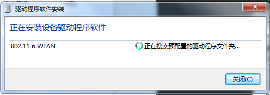

蹭网方法(非常详细100%成功)
发布时间：2014-11-6编辑：80eboy原创转载请保留出处
现在到处都有WIFI热点，用手机搜索WIFI热点一堆一堆的。手机蹭网已经成了手机党的必备技能了，使用WIFI万能钥匙就可以连接上大很多WIFI热点；很方便我们这些手机党。
使用手机蹭网并不是今天要介绍的主题，我们今天的主题是《怎样使用电脑蹭网》。
需要准备的软件和硬件：
硬件：
1.需要一部安卓手机
2.需要一台电脑(台式或笔记本都可以)
3.需要一台WIFI信号接收器(笔记本电脑可以不要)
软件：
1.WIFI万能钥匙安卓版
2.Root Explorer安卓版
3.WIFI接收器驱动软件(笔记本电脑可以不用
相关软件下载(点击)
在教程开始前我们先了解一下基本原理，帮助你更好地理解。
基本原理解释：
我们都知道安卓手机连接WIFI热点只需要第一次输入WIFI的密码，第二次连接时就不需要再输入密码了。其实就是安卓手机会把密码保存在了安卓手机里了，所以再次连接的时候就不需要输入密码了，直接从手机内部取出密码就可以了。
那么假如我用WIFI万能钥匙连接上了某一个WIFI热点，是不是这个WIFI热点的密码也会保存在我的手机上呢？ 答案是：肯定的。
那么我们推理假如我用手机在家附近用WIFI万能钥匙把附近的WIFI热点都连接一遍，那不是把附近的WIFI热点密码都保存在手机上了吗,然后把手机里保存的WIFI密码读取出来；回家用电脑搜索附近的WIFI热点输入密码不就可以使用电脑上网了吗。
我告诉你我们的推理完全可行的。根据推理中有两步好像有问题的哦。
1.怎么把手机里的保存的WIFI热点的密码读取出来呢？
答：只要安卓手机ROOT了，都能读出来；具体请看下面详细步骤。
2.笔记本电脑搜不到附近可用的WIFI热点呢？
答：这是我们就需要一台增强WIFI信号的设备了，把信号增强这样用电脑也能收到附近的WIFI热点啦。
WIFI信号接收器介绍(点击查看)
下面是详细步骤，在详细步骤之前先来一则笑话。
步骤一：获取WIFI热点密码
1.安装“WIFI万能钥匙.APK”到手机中，并打开WIFI万能钥匙
2.点击“开启WIFI”打开手机WIFI，点击“一键查询万能钥匙”
3.这是可以看见一些WIFI热点后面带有一个钥匙的图标，表示该WIFI热点可用。点击带有钥匙图标的热点
4.在弹出的窗口点击“万能钥匙自动连接”。
5.如果你的手机没有联网会提示打开网络，点击“是”。
6.正在获取WIFI热点的密码并连接该WIFI热点
7.当获取密码成功并连接上时，在该WIFI热点的名称后面会有一个“对”的图标。
8.当网络正常时万能钥匙转到这个界面，出现这个界面你就可以使用该WIFI热点上网了。
具体步骤如图(点击查看大图)
步骤二：安装Root Explorer到手机，并获取手机中保存的密码
1.安装完Root Explorer后，打开Root Explorer
2.在根目录中找到“data”文件夹并打开
3.如果出现这步说明你的手机还没有ROOT，请ROOT你的手机
4.如果手机root了会进入data文件夹，找到“misc”文件夹并打开
5.找到wifi文件夹并打开
6.找到“wpa_supplicant.conf”文件并打开
7.所有这部手机连接过的WIFI热点的密码都这这里，其中ssid=引号中的是WiFi热点的名称，psk=后面引号里的是该热点的密码。
具体步骤如图(点击查看大图)
到这里我们完成了大部分的工作了，如果你用的是笔记本并且能收到可用的WIFI热点，你就可以输入密码用笔记本电脑上网了。（PS：就写上面这些就花我差不多3个小时，效率太差了）
下面的步骤是针对台式电脑或笔记本无法接收到可用的WIFI热点的，使用了一款USB无线网卡，它接收能力非常强。(需要了解这款USB WIF信号接收器请点击这里)
步骤三：
1.安装WIFI接收器的驱动程序。在安装驱动程序之前千万不要把WIFI接收器的usb插到电脑上，这样会安装不对驱动的。按你电脑操作系统选择安装，一路默认就可以了。
2.安装完驱动程序，插上WIFI接收器到电脑上；会提示安装驱动的，等待它自动安装驱动。
当提示“802.11n USB Wireless LAN Card 可以使用”就表示是驱动安装好了，点击“关闭”。

3.点击电脑右下角“网络”图标就会发现多了一个网络并且收到了很多WIFI热点(如下图)。根据步骤二中第7点文件中有的WIFI热点，选择连接并深入密码就可以上网了。